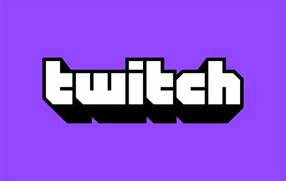

Justin Kan et Emmett Shear ont créé un servce de streaming vidéo en direct. A l'origine Twitch est issu du site Justin.tv. L'application comptabilise plus de 100 millions de téléchargement, majoritairement par les 25-34 ans et viennent ensuite les 16-24 ans, avec 22,3%.
Le réseau social twitch est une plateforme de streaming en direct principalement utilisée pour les jeux vidéo. Cette platforme permet aussi de partager du contenu divers tel que la musique, de l'art et des discussions qui favorisent une forte intéractivité avec les spectateurs ou streamers via le chat en ligne et des systèmes de soutien.
Pour avoir l'accès de Twitch, les règles stipules : un âge minimal de 13 ans, être en accord avec les conditions d'utilisations et l'exclusion de certaines activités. Pour donc profiter plainement de Twitch il faudra respecter toutes ces règles.